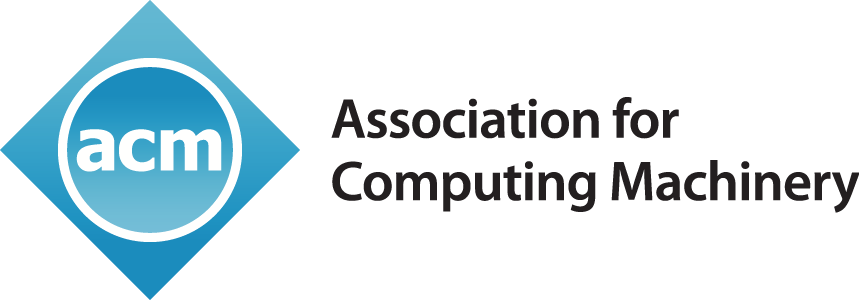
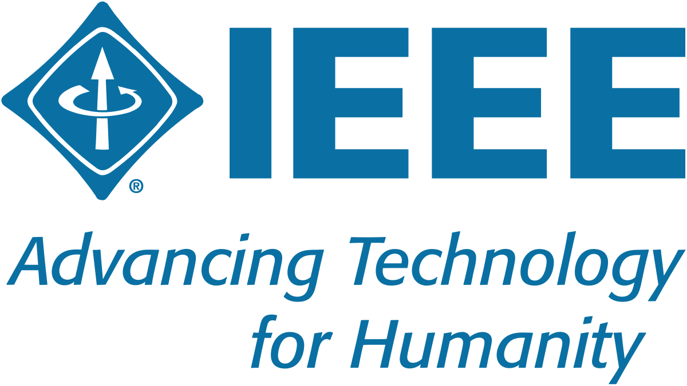

Research accepted to conferences promoted by



Protecting aquatic environments with innovative ultrasound technology
Learn More
Harmful algal blooms (HABs) are overgrown masses of algae that damage ecosystems, infrastructure, and public health. They frequently cause the deaths of many aquatic animals and plants, but have even occasionally killed humans and domestic dogs. HABs can also indirectly influence human health through shellfish disease and other aquatic vectors. A single HAB can result in economic losses spanning hundreds of millions of dollars.
With climate change, HABs are becoming an increasingly common occurrence, so developing HAB treatment technology is of immediate concern.
Discover Our TechnologyOur mission is to combat HABs using ultrasound technology. We hope to implement our noninvasive HAB detection and mitigation approach which combines machine learning with ultrasonic technology. The potential of our technology is huge, as it provides an alternative to harsh chemicals currently used for HAB control (which also harm other marine life).
As well as providing technology solutions, we work to raise community awareness and engagement around HAB impacts. Through educational outreach programs, partnerships with environmental organizations, and public awareness campaigns, we educate communities about HAB mitigation and the role they can play in protecting marine environments. SonicSeaSentinel beleives that a sustainable future requires innovative technology as well as an informed public that is motivated towards environmental conservation.
Research awarded at the Association for Computing Machinery International Conference on Artificial Intelligence and Pattern Recognition (ACM AIPR)
Harmful algal blooms (HABs) pose significant threats to aquatic ecosystems, public health, and local economies by degrading water quality, causing fish kills, and producing harmful toxins. Traditional methods of detecting and mitigating HABs are often labor-intensive and expensive, targeting only smaller water bodies. Additionally, many detection systems currently work on a microbial scale or focus only on detection rather than species classification.
Existing research indicates that ultrasonic waves at specific frequencies can effectively destroy algal cells, but current devices are limited to utilizing a fixed ultrasonic frequency. This project leverages machine learning to locate and classify multiple types of oceanic HABs, utilizing ultrasonic emissions at varied frequencies to eliminate each targeted HAB.
The system analyzes satellite images with convolutional neural networks to identify and categorize different types of harmful algae, allowing for rapid, large-scale monitoring of water bodies and providing timely data for environmental management. After the visual processing, we identify the optimal ultrasonic wave frequency for each identified HAB and emit it through a transducer. Our technique ensures that other marine life is not affected by accounting for the hearing frequency ranges of various ocean-dwelling organisms.
We develop a prototype consisting of two parts: a drone for autonomous scanning across the ocean, and a flotation device for treatment. Our prototype successfully combines satellite-based detection with ultrasonic mitigation, demonstrating the practical application of this dual approach. Preliminary field tests indicate the prototype's effectiveness in identifying and reducing oceanic HABs. This scalable and eco-friendly solution improves HAB management by supporting multiple species and applying ultrasonic mitigation towards the ocean, contributing to the protection of aquatic environments and public health.
Our mitigation system consists of two disjoint components:
The aerial drone uses high-quality imagery to autonomously scan large water bodies and locate HABs. It then feeds the captured visual data through filters and a convolutional neural network to classify the types of algae present.
The underwater device is deployed into the treatment area, equipped with ultrasonic transducers to emit the optimal frequency for mitigation. The frequency is also chosen such that there is minimal disturbance to the surrounding ecosystem.
Our drone autonomously classifies HABs, ensuring optimal elimination.
Our ultrasound technology eliminates HABs without damaging the surrounding environment or harming marine life.
Our system chooses the ideal ultrasound emission frequency depending on the species identified.
SonicSeaSentinel tracks HABs through a combination of drones and satellite imagery. We use drones to capture high resolution images and environmental data to classify algal species and map affected areas.
Our convolutional neural network (ML) and satellite data from programs like Sentinel-2 give us rapid response times. This way we can identify bloom activity quickly and respond to it with mitigation while monitoring ecosystem health.
Passionate leaders committed to revolutionizing HAB mitigation.
Sajeev Magesh is a high school senior at Dublin High School with a strong interest in advanced mathematics and machine learning. He is currently studying calculus, electrical engineering, and exploring the use of AI in addressing environmental challenges.
Varun Rao is a high school senior at Mission San Jose High School in Fremont, California. He is interested in the theoretical foundations and applications of computer science, particularly in relation to the environment.
Have questions about our technology or interested in collaborating with us? Reach out!